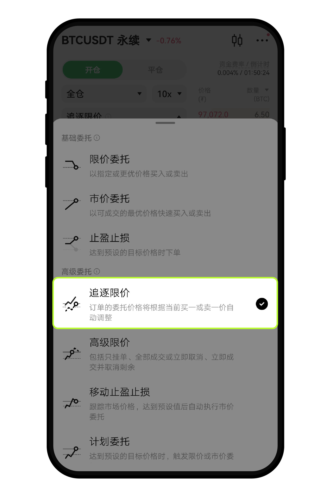
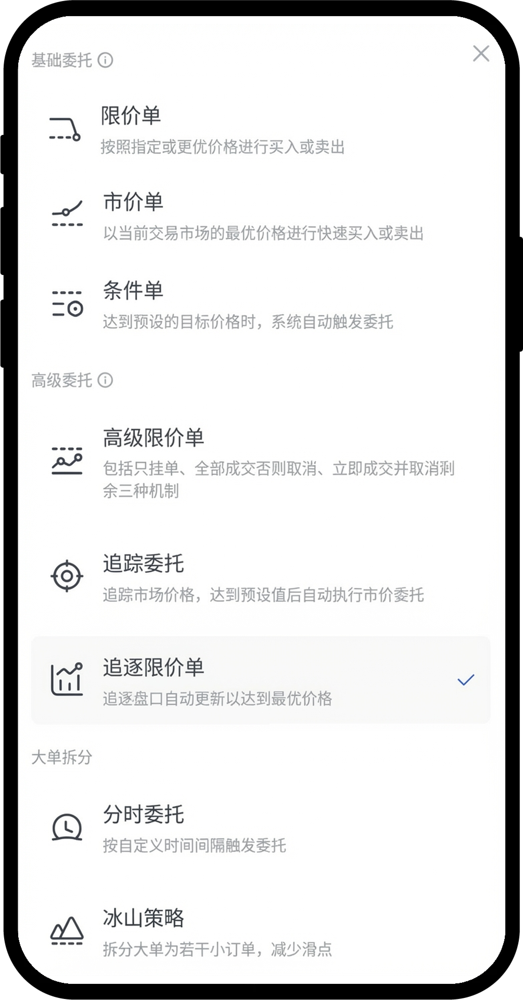
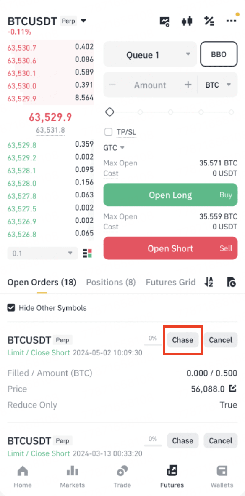
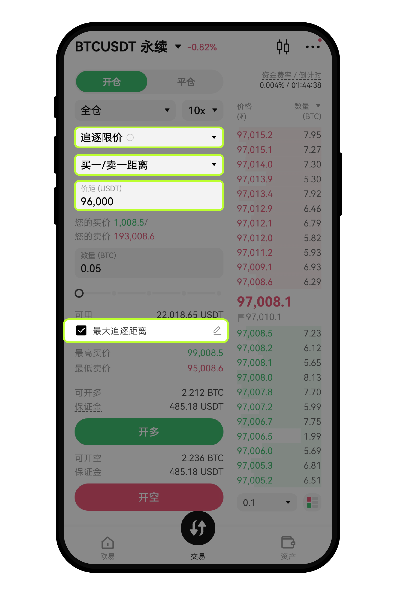
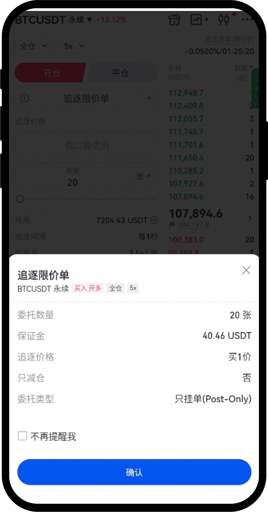
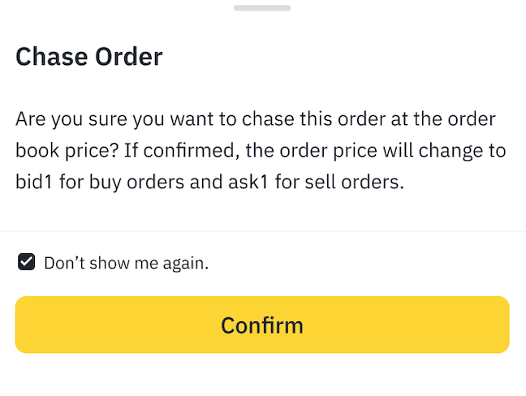
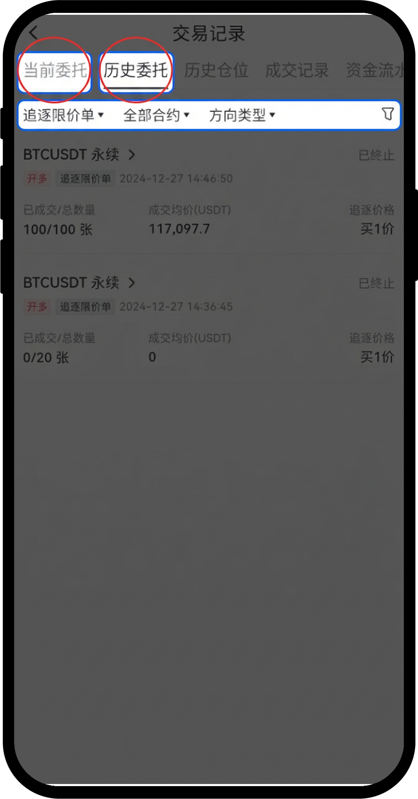

买跟买一，卖跟卖一
OKX 还可以设价差。Gate 默认贴盘口一价，约每秒改一次。币安确认后改到当前买一 / 卖一。
对照 OKX、Gate、币安同一条路径。前两家是持续跟随的订单类型；币安是在已有挂单上点一次 Chase，改到买一 / 卖一。依据官方教程，未真实下单。
OKX / Gate：下单后系统持续改价。币安：先下一张普通限价，再在委托列表点 Chase，只改这一次。
OKX 还可以设价差。Gate 默认贴盘口一价，约每秒改一次。币安确认后改到当前买一 / 卖一。
OKX / Gate 可设最大追逐距离，碰到就撤剩余。币安没有这条停止线。
OKX / Gate 改距离只能撤了重下。币安用 Chase 改价、Cancel 撤剩余，撤单不等于平仓。
OKX / Gate 从限价旁边选出追逐限价。币安没有这个类型，入口在当前委托的 Chase。
数量、跟谁、追多远。距离要能换成具体价格。币安没有这些参数。
核对跟随谁、停止线、只挂单。币安核对的是：这次会改到买一还是卖一。
还在追、现在挂在哪个价。币安改完后仍是普通限价，Chase 还在旁边。
已成交留下，剩余继续跟。进度写成 8/100 比只写「部分成交」清楚。
撤的是未成交部分。已成交仓位还在。
买到最高追逐价、或卖到最低追逐价，系统停改价并撤剩余。币安没有这一步。
结束原因、成交均价、跟随方式、停止线。原因要能分清：全成、手撤、触线。
总量成交完，追逐结束。
剩余撤销，已成交保留。
达到最大追逐距离，系统撤剩余。币安无此路径。
入口有一句话，距离能换成具体价格。后半段教程薄。
独立筛选、分数进度、详情字段。入口和追踪委托撞名。
Chase 贴着未成交单。改一次就停，没有持续跟随、也没有停止线。
绿色 = 官方教程有截图。蓝色 = 只有文字。









| 阶段 | OKX | Gate | 币安 |
|---|---|---|---|
| 机制 | 持续自动追逐 | 持续自动追逐 | 点一次，改到买一 / 卖一 |
| 发现 | 高级组 + 一句话解释 | 高级组 + 一句话；旁边有追踪委托 | 当前委托旁 Chase |
| 设置 | 可跟一价或价差；弹层换算高低价 | 默认盘口一价；距离在高级选项 | 无参数 |
| 确认 | 有二次确认，未见截图 | 有弹层，写了只挂单；停止线未出现 | 写明 bid1 / ask1，可不再提示 |
| 运行 | 混在委托列表，价格旁标「追逐」 | 可筛选；样本写买1价 | 改完仍是 Limit，Chase 还在 |
| 部分成交 | 有已成交量，未见组合表达 | 8/100 + FAQ：剩余继续追 | 有 Filled / Amount；样本未成交 |
| 撤单 | 单笔 / 批量 | 单笔 / 全部 | Cancel 和 Chase 并排 |
| 触线 | 规则图清楚；结果页未见 | 最高追逐价 + 历史「已终止」 | 无停止线 |
| 复盘 | 教程未覆盖详情 | 历史可筛；结束原因不清晰 | 教程未见改价记录 |
| 只挂单 | 始终 post-only | 确认页写 Post-Only | 教程未写 |
| 改价频率 | 约每秒 | 表单写每 1 秒 | 点一次改一次 |
入口解释、追逐方式、距离换成具体价格。确认页、部分成交、结束原因，教程没给界面。
独立筛选、8/100 进度、运行中 / 已终止。入口和追踪委托撞名；确认页没写停止线。
Chase 贴着未成交单，确认写清改到买一 / 卖一。这是改一次，不是一直追。
依据：OKX · 如何使用追逐限价委托 · Gate · 如何使用追逐限价单 · 币安 · App Chase Order。截图在 research/。